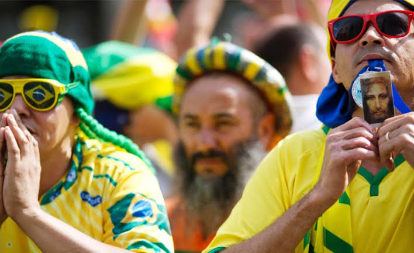

O futebol é um esporte que desperta paixões e admiração em todo o mundo, e uma das razões é a grande quantidade de recordes e estatísticas impressionantes que os jogadores e equipes acumulam ao longo do tempo. Alguns exemplos incluem o recorde de maior número de gols em uma única temporada, que pertence ao jogador Lionel Messi, que marcou 73 gols em 2011-2012. Já a equipe com mais títulos de uma competição é o Al-Ahly, do Egito, com 10 títulos da Liga dos Campeões da África. O jogador mais velho a disputar uma Copa do Mundo é Faryd Mondragón, da Colômbia, que tinha 43 anos quando disputou a competição em 2014. Por fim, a seleção com mais títulos de Copa do Mundo é o Brasil, com cinco conquistas
Superstições e Rituais
Muitos jogadores e equipes de futebol têm superstições e rituais que seguem antes ou durante as partidas. Esses rituais podem incluir usar uma meia especial, fazer uma oração específica, ouvir uma música específica ou até mesmo entrar no campo com o pé direito. Um exemplo famoso é o jogador italiano Gianluigi Buffon, que costuma beijar o símbolo do Juventus em sua camisa antes de cada partida. Outro exemplo é a seleção mexicana, que costuma fazer uma dança ritual no vestiário antes de entrar em campo.

Curiosidades Históricas
O futebol tem uma longa história e muitas curiosidades históricas interessantes. Por exemplo, o primeiro jogo internacional de futebol foi disputado entre Escócia e Inglaterra em 1872, e terminou empatado em 0 a 0. Já a primeira partida da Copa do Mundo foi disputada em 1930, e o Uruguai foi o país campeão. Além disso, o futebol feminino teve sua primeira partida oficial disputada em 1895, e a primeira Copa do Mundo feminina foi realizada em 1991. Outra curiosidade interessante é que a palavra "soccer", utilizada pelos americanos para se referir ao futebol, tem origem na Inglaterra, onde o termo "Association Football" era abreviado para "Assoc Football" e, posteriormente, para "Soccer".
Futebol e Cultura Popular
O futebol é um esporte que está presente na cultura popular de muitos países e é frequentemente mencionado em filmes, músicas e programas de TV. Algumas músicas famosas que mencionam o futebol incluem "Waka Waka (This Time for Africa)", de Shakira, que foi o tema oficial da Copa do Mundo de 2010, e "Three Lions", da banda britânica The Lightning Seeds, que foi criada para a Eurocopa de 1996. Já filmes como "Era Uma Vez um Gigante" e "Fever Pitch" retratam a paixão dos torcedores pelo futebol. Além disso, o futebol também inspira a criação de jogos de videogame, como a série FIFA, que é uma das mais populares do mundo.